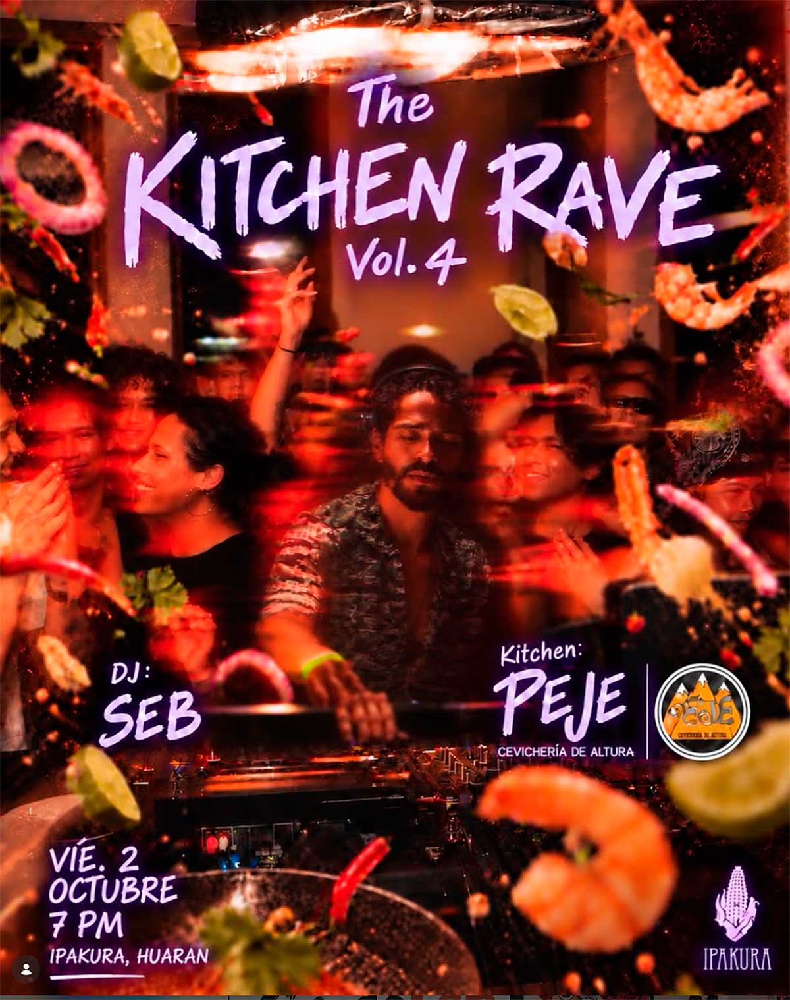

THE KITCHEN RAVE VOL.4
fecha: 02/10/26 hora: 7pm
lugar: Ipakura,
Huarán, Valle Sagrado de los Incas


THE KITCHEN RAVE VOL. 4 🐟🔊
Volvemos a la cocina, esta vez con algo de mar.
Nuestro beat chef @sebcordova estará sirviendo una mezcla power de sonidos, sazonados para bailar y servidos bien calientes.
Mientras tanto, PEJE @pejecevicheriadealtura toma la cocina, con Fiorella Rodríguez preparando una selección fresca de tapas marinas y pulpo ahumado en salsa anticuchera 🐙
Y sí: todxs invitadxs a entrar a la cocina.
Sin backstage, sin pista aparte. El DJ, la chef, la comida, el baile y tod@s cocinándose juntos en el mismo espacio.
¿Qué hay en el menú?
🐟 Tapas marinas y pulpo ahumado en salsa anticuchera por @pejecevicheriadealtura
🔥 Beats frescos por Seb 🎧
🍸 Tragos para mantenerlo jugoso
🕺 Tú, en algún lugar entre la cocina y la pista
Come.
Baila.
Repite.
Toda buena fiesta termina en la cocina.
La nuestra empieza ahí.
THE KITCHEN RAVE VOL. 4 🐟🔊
🗓️ Vie. 2 Oct · 7 PM
📍Ipakura · Huarán
👉 Pre-venta (hasta 30 Set.): 15 soles
👉 Regular: 25 soles
👉 Tickets al DM!
LINE-UP:
Seb